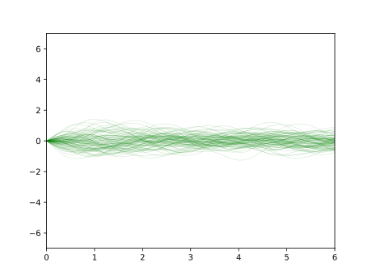

module GaussianProcessDemo where
import LazyPPL
import Distr
import Prelude hiding ((<>))
import Data.List
import Data.Map (empty,lookup,insert,size,keys,elems,Map)
import Numeric.LinearAlgebra hiding (step,size)
import Numeric.LinearAlgebra.Data hiding (step,size)
import Control.Monad
import Data.IORef
import System.IO.Unsafe
import Debug.Trace
import Graphics.Matplotlib hiding (density)
We can define a random function gp :: (Double -> Double -> Double) -> Prob (Double -> Double)
which describes a Gaussian
process. This requires an infinite number of random choices, first
because it is defined for arbitrarily large x, but also it
needs an infinite number of random choices in each finite interval. This
is all dealt with using laziness. We cannot plot the function precisely,
but when we plot it with a fixed resolution and viewport, it is fine
because only finitely many random choices are triggered.
The following defines a GP prior generated with the radial basis function, a.k.a. squared exponential covariance.
rbf var l x1 x2 = var * exp (-(x1 - x2)^2 / (2 * l^2))
plotGPPrior =
do
fws <- mh 1 $ sample $ gp $ rbf 0.25 0.5
let xys = map (\f -> map (\x -> (x,f x)) [0,0.1..6]) $ map fst $ take 100 $ fws
plotCoords "images/gp-prior.svg" [] xys (-7) 7 0.2dataset :: [(Double, Double)]
dataset = [(0,0.6), (1, 0.7), (2,1.2), (3,3.2), (4,6.8), (5, 8.2), (6,8.4)]g plus
a random start point a. (Note that we are treating this
g as a function like any other. And we could also have
built this model with the second-order regress function
from the other regression examples.)
example :: Meas (Double -> Double)
example = do g <- sample $ gp $ rbf 1 1
a <- sample $ normal 0 3
b <- sample $ normal 0 3
let f x = a + b * x + (g x)
forM_ dataset (\(x,y) -> score $ normalPdf (f x) 0.3 y)
return fplotGPRegression =
do
fws <- mh 0.2 example
let xys = map (\f -> map (\x -> (x,f x)) [0,0.1..6]) $ map fst $ take 100 $ every 1000 $ drop 10000 $ fws
plotCoords "images/gp-reg.svg" dataset xys (-2) 10 0.1
step :: (Double -> Double -> Double) -> Data.Map.Map Double Double -> Double -> Double -> Double
step cov table x seed =
let sig11 = cov x x
sig12 = matrix (size table) [cov x b | b <-keys table]
sig21 = matrix 1 [cov a x | a <-keys table]
sig22 = matrix (size table) [cov a b | a <- keys table , b <-keys table]
regCoeff = sig12 <> (pinvTol 1E8 sig22)
mu = (regCoeff <> (matrix 1 $ elems table)) `atIndex` (0,0)
var = sig11 - ((regCoeff <> sig21) `atIndex` (0,0)) in
mu + seed * (sqrt $ if var > -0.01 then (abs var) else trace (show var) $ abs var)
gp :: (Double -> Double -> Double) -> Prob (Double -> Double)
gp cov = do ns <- iid $ normal 0 1
return $ unsafePerformIO $ do
ref <- newIORef Data.Map.empty
modifyIORef' ref (Data.Map.insert 0 0)
return $ \x -> unsafePerformIO $ do
table <- readIORef ref
case Data.Map.lookup x table of
Just y -> do {return y}
Nothing -> do let y = step cov table x $ ns !! (1 + size table)
modifyIORef' ref (Data.Map.insert x y)
return yplotCoords :: String -> [(Double,Double)] -> [[(Double,Double)]] -> Double -> Double -> Double -> IO ()
plotCoords filename dataset xyss ymin ymax alpha =
do putStrLn $ "Plotting " ++ filename ++ "..."
file filename $ foldl (\a xys -> a % plot (map fst xys) (map snd xys) @@ [o1 "go-", o2 "linewidth" (0.5 :: Double), o2 "alpha" alpha, o2 "ms" (0 :: Int)]) (scatter (map fst dataset) (map snd dataset) @@ [o2 "c" "black"] % xlim (0 :: Int) (6 :: Int) % ylim ymin ymax) xyss
putStrLn "Done."
return ()
main :: IO ()
main = do { plotGPPrior ; plotGPRegression }